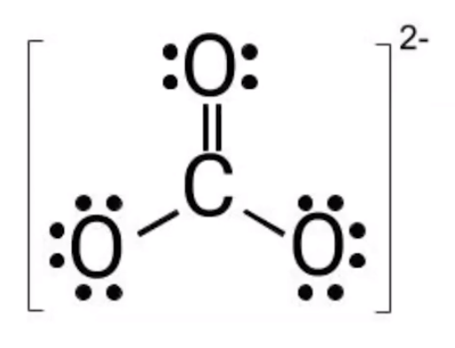
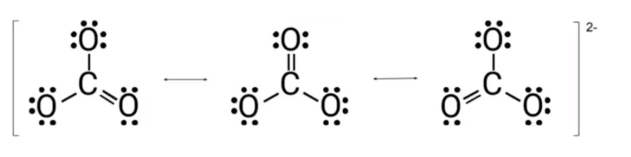
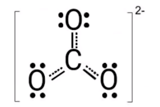
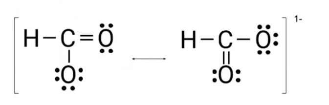

What happens when there are multiple places to put double bonds?
{width="3.5625in" height="2.71875in"}
There is not actually 1 shorter double bond and 2 longer single bonds
All are the same length
Because electrons are always in motion, the three bonds are the same length
Resonance:
If a molecule has more than one possible Lewis diagram, show them all
The actual molecule is a superposition of all the structures
{width="6.28125in" height="1.5625in"}
{width="2.1875in" height="1.46875in"}
{width="4.666666666666667in" height="1.4895833333333333in"}
All resonance structures must be shown?